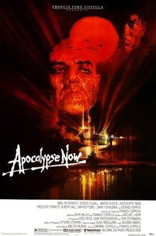

.jpg){kind=link}

Explore film ↗Apocalypse Now
Francis Ford Coppola
DIRECTOR PROFILE
Francis Ford Coppola ( KOH-pə-lə; born April 7, 1939) is an American filmmaker.

LIFE & CAREER
Francis Ford Coppola ( KOH-pə-lə; born April 7, 1939) is an American filmmaker. One of the leading figures of the New Hollywood, Coppola is widely regarded as one of the greatest and most influential filmmakers in the history of cinema. He has received various accolades including five Academy Awards, a BAFTA Award, three Golden Globe Awards, and two Palmes d'Or, as well as nominations for two Emmy Awards and a Grammy Award.
Adapted excerpt from Wikipedia, CC BY-SA 4.0. Pronunciation notes omitted.
Read the full biographyImage: Colleen Sturtevant. Source & rights: CC BY-SA 4.0 ↗.
Profile reference: Director background ↗
Open this director checklist ↗
A selection of this director’s films available in the archive.

Explore film ↗Francis Ford Coppola
 Explore film ↗
Explore film ↗Francis Ford Coppola

1974 · Francis Ford Coppola